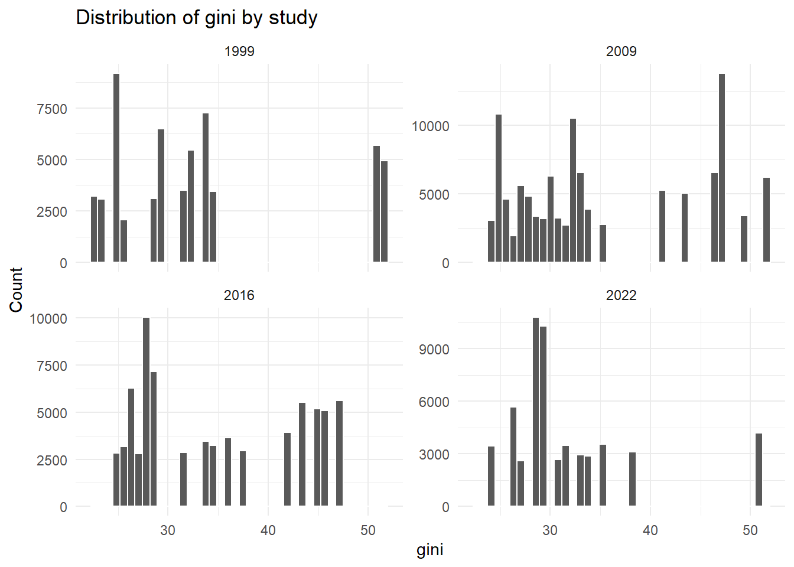
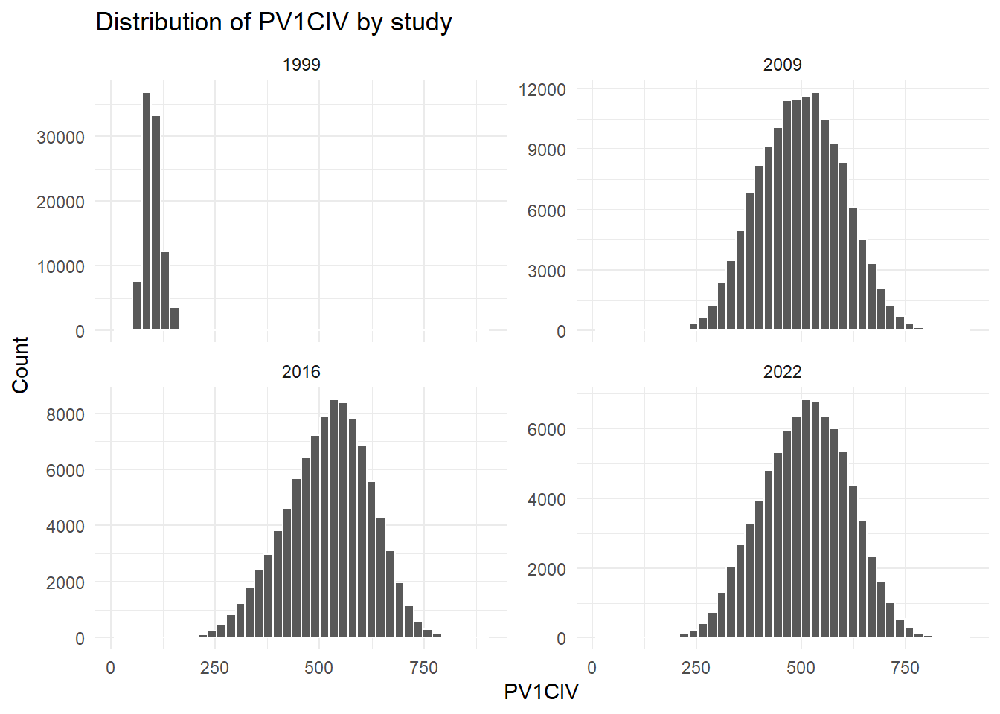
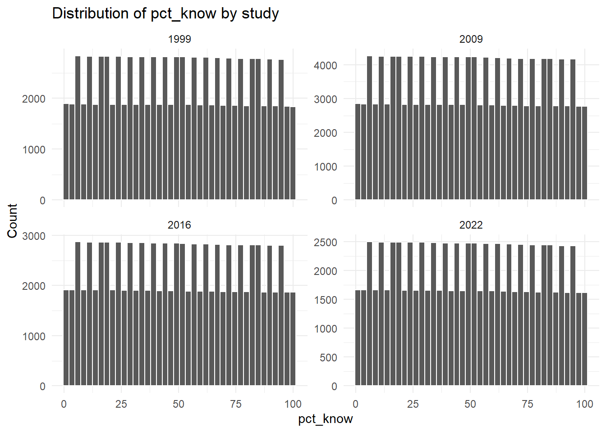
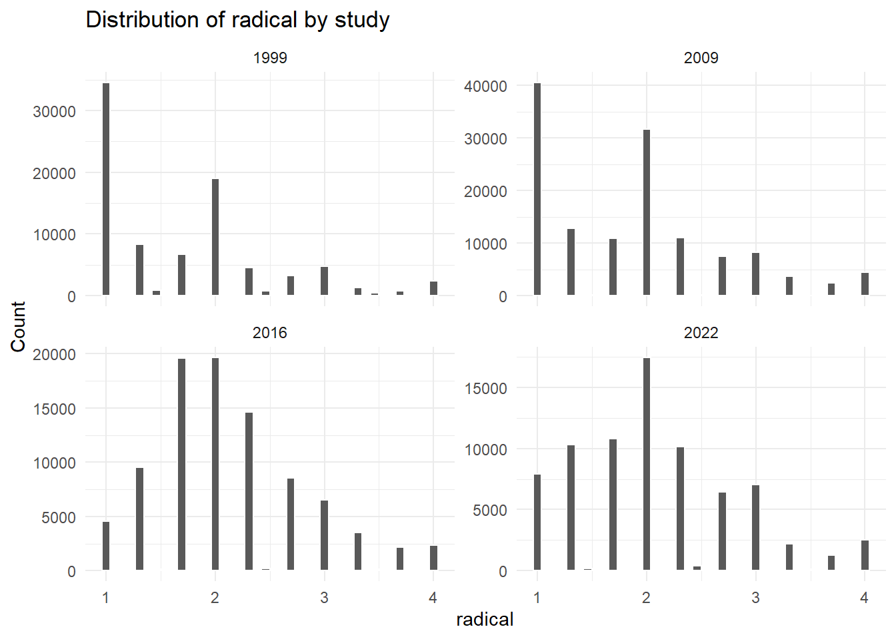
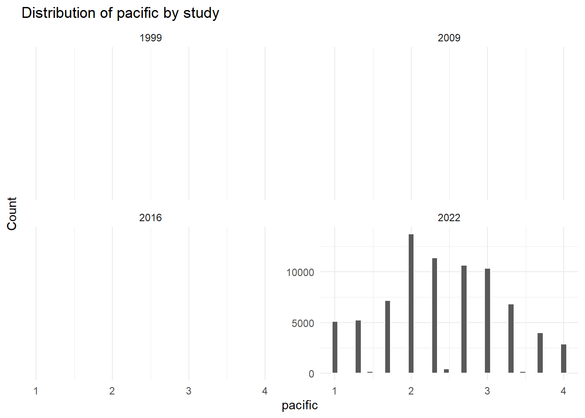
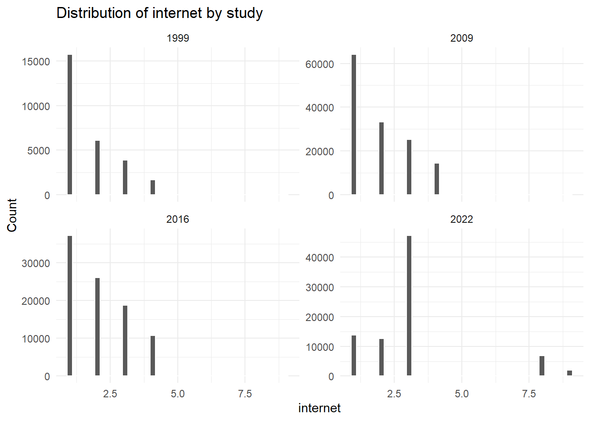

library(dplyr)
library(tidyr)
library(readr)
library(purrr)
library(ggplot2)
pooled_path <- "proc/output/iccs_cived_1999_2009_2016_2022_pooled.rds"
pooled_path_candidates <- c(
"proc/output/iccs_cived_1999_2009_2016_2022_pooled.rds",
"output/iccs_cived_1999_2009_2016_2022_pooled.rds"
)
pooled_path <- pooled_path_candidates[file.exists(pooled_path_candidates)][1]
if (!file.exists(pooled_path)) {
stop(
"Pooled file not found. Tried: ",
paste(pooled_path_candidates, collapse = ", ")
)
}
db <- readRDS(pooled_path)Pooled Database Quality Report
1 Objective
This report checks whether the pooled dataset is structurally and statistically consistent for continued analysis.
Main checks included:
- Dataset dimensions and variable structure
- Frequencies for categorical/discrete variables
- Percentage of missing values per variable
- Statistical distributions of numeric variables
- Key consistency checks by study wave and country
2 Load dataset
3 1. Dimensions and structure
dimensions <- tibble(
n_rows = nrow(db),
n_columns = ncol(db),
object_size_mb = round(as.numeric(object.size(db)) / 1024^2, 2)
)
dimensions# A tibble: 1 × 3
n_rows n_columns object_size_mb
<int> <int> <dbl>
1 411456 18 54.9structure_tbl <- tibble(
variable = names(db),
class = purrr::map_chr(db, ~ paste(class(.x), collapse = ", ")),
type = purrr::map_chr(db, typeof)
)
structure_tbl# A tibble: 18 × 3
variable class type
<chr> <chr> <chr>
1 idcntry numeric double
2 idschool numeric double
3 study numeric double
4 year numeric double
5 marcha numeric double
6 ocupa numeric double
7 trafico numeric double
8 rayar numeric double
9 radical numeric double
10 pacific numeric double
11 gini numeric double
12 PV1CIV numeric double
13 pct_know integer integer
14 S_GENDER numeric double
15 S_HISCED numeric double
16 University numeric double
17 internet numeric double
18 totwgts numeric double 4 2. Coverage by study wave
study_counts <- db |>
count(study, name = "n") |>
mutate(pct = round(100 * n / sum(n), 2)) |>
arrange(study)
study_counts# A tibble: 4 × 3
study n pct
<dbl> <int> <dbl>
1 1999 93882 22.8
2 2009 140650 34.2
3 2016 94603 23.0
4 2022 82321 20.0country_by_study <- db |>
group_by(study) |>
summarise(
n_countries = n_distinct(idcntry, na.rm = TRUE),
n_schools = n_distinct(idschool, na.rm = TRUE),
.groups = "drop"
) |>
arrange(study)
country_by_study# A tibble: 4 × 3
study n_countries n_schools
<dbl> <int> <int>
1 1999 28 805
2 2009 38 500
3 2016 24 352
4 2022 24 2515 3. Missing data profile (% NA)
na_profile <- tibble(variable = names(db)) |>
mutate(
n_missing = purrr::map_int(variable, ~ sum(is.na(db[[.x]]))),
pct_missing = round(100 * n_missing / nrow(db), 2),
n_non_missing = nrow(db) - n_missing
) |>
arrange(desc(pct_missing), variable)
na_profile# A tibble: 18 × 4
variable n_missing pct_missing n_non_missing
<chr> <int> <dbl> <int>
1 pacific 333310 81.0 78146
2 gini 110842 26.9 300614
3 internet 71953 17.5 339503
4 marcha 31131 7.57 380325
5 ocupa 27895 6.78 383561
6 rayar 27450 6.67 384006
7 trafico 27261 6.63 384195
8 University 23581 5.73 387875
9 S_HISCED 23373 5.68 388083
10 radical 21508 5.23 389948
11 S_GENDER 12526 3.04 398930
12 PV1CIV 317 0.08 411139
13 pct_know 317 0.08 411139
14 idcntry 0 0 411456
15 idschool 0 0 411456
16 study 0 0 411456
17 totwgts 0 0 411456
18 year 0 0 4114565.1 Variables with highest missingness
na_profile |>
slice_head(n = min(15, nrow(na_profile)))# A tibble: 15 × 4
variable n_missing pct_missing n_non_missing
<chr> <int> <dbl> <int>
1 pacific 333310 81.0 78146
2 gini 110842 26.9 300614
3 internet 71953 17.5 339503
4 marcha 31131 7.57 380325
5 ocupa 27895 6.78 383561
6 rayar 27450 6.67 384006
7 trafico 27261 6.63 384195
8 University 23581 5.73 387875
9 S_HISCED 23373 5.68 388083
10 radical 21508 5.23 389948
11 S_GENDER 12526 3.04 398930
12 PV1CIV 317 0.08 411139
13 pct_know 317 0.08 411139
14 idcntry 0 0 411456
15 idschool 0 0 4114565.2 Missingness by study (selected key variables)
key_vars <- c("gini", "PV1CIV", "pct_know", "S_GENDER", "S_HISCED", "University", "internet")
key_vars <- key_vars[key_vars %in% names(db)]
na_by_study <- db |>
group_by(study) |>
summarise(
across(
all_of(key_vars),
~ round(100 * mean(is.na(.x)), 2),
.names = "{.col}_na_pct"
),
.groups = "drop"
) |>
arrange(study)
na_by_study# A tibble: 4 × 8
study gini_na_pct PV1CIV_na_pct pct_know_na_pct S_GENDER_na_pct
<dbl> <dbl> <dbl> <dbl> <dbl>
1 1999 38.9 0.34 0.34 11.1
2 2009 19.1 0 0 0.91
3 2016 22.1 0 0 0.03
4 2022 32.4 0 0 0.97
# ℹ 3 more variables: S_HISCED_na_pct <dbl>, University_na_pct <dbl>,
# internet_na_pct <dbl>6 4. Frequencies of variables
6.1 Categorical/discrete variables
is_discrete <- function(x, max_unique = 20) {
if (is.character(x) || is.factor(x) || is.logical(x)) {
return(TRUE)
}
if (is.numeric(x) || is.integer(x)) {
ux <- unique(x[!is.na(x)])
return(length(ux) <= max_unique)
}
FALSE
}
discrete_vars <- names(db)[purrr::map_lgl(db, is_discrete)]
discrete_vars [1] "study" "year" "marcha" "ocupa" "trafico"
[6] "rayar" "radical" "pacific" "S_GENDER" "S_HISCED"
[11] "University" "internet" freq_table <- function(data, var) {
data |>
count(value = .data[[var]], name = "n", sort = TRUE) |>
mutate(
variable = var,
pct = round(100 * n / sum(n), 2)
) |>
select(all_of(c("variable", "value", "n", "pct")))
}
freqs_all <- purrr::map_dfr(discrete_vars, ~ freq_table(db, .x))
freqs_all# A tibble: 76 × 4
variable value n pct
<chr> <dbl> <int> <dbl>
1 study 2009 140650 34.2
2 study 2016 94603 23.0
3 study 1999 93882 22.8
4 study 2022 82321 20.0
5 year 2 140650 34.2
6 year 3 94603 23.0
7 year 1 93882 22.8
8 year 4 82321 20.0
9 marcha 1 193905 47.1
10 marcha 0 186420 45.3
# ℹ 66 more rows6.2 Quick frequencies for core harmonized variables
core_discrete <- c(
"study", "year", "marcha", "ocupa", "trafico", "rayar",
"S_GENDER", "University"
)
core_discrete <- core_discrete[core_discrete %in% names(db)]
freqs_all |>
filter(variable %in% core_discrete) |>
arrange(variable, desc(n), value)# A tibble: 26 × 4
variable value n pct
<chr> <dbl> <int> <dbl>
1 S_GENDER 1 200647 48.8
2 S_GENDER 0 198283 48.2
3 S_GENDER NA 12526 3.04
4 University 0 259545 63.1
5 University 1 128330 31.2
6 University NA 23581 5.73
7 marcha 1 193905 47.1
8 marcha 0 186420 45.3
9 marcha NA 31131 7.57
10 ocupa 0 313736 76.2
# ℹ 16 more rows7 5. Statistical distribution of numeric variables
numeric_vars <- names(db)[purrr::map_lgl(db, is.numeric)]
num_summary <- tibble(variable = numeric_vars) |>
mutate(
n_non_missing = purrr::map_int(variable, ~ sum(!is.na(db[[.x]]))),
mean = purrr::map_dbl(variable, ~ mean(db[[.x]], na.rm = TRUE)),
sd = purrr::map_dbl(variable, ~ sd(db[[.x]], na.rm = TRUE)),
min = purrr::map_dbl(variable, ~ suppressWarnings(min(db[[.x]], na.rm = TRUE))),
p01 = purrr::map_dbl(variable, ~ as.numeric(quantile(db[[.x]], probs = 0.01, na.rm = TRUE, names = FALSE))),
p05 = purrr::map_dbl(variable, ~ as.numeric(quantile(db[[.x]], probs = 0.05, na.rm = TRUE, names = FALSE))),
p25 = purrr::map_dbl(variable, ~ as.numeric(quantile(db[[.x]], probs = 0.25, na.rm = TRUE, names = FALSE))),
p50 = purrr::map_dbl(variable, ~ as.numeric(quantile(db[[.x]], probs = 0.50, na.rm = TRUE, names = FALSE))),
p75 = purrr::map_dbl(variable, ~ as.numeric(quantile(db[[.x]], probs = 0.75, na.rm = TRUE, names = FALSE))),
p95 = purrr::map_dbl(variable, ~ as.numeric(quantile(db[[.x]], probs = 0.95, na.rm = TRUE, names = FALSE))),
p99 = purrr::map_dbl(variable, ~ as.numeric(quantile(db[[.x]], probs = 0.99, na.rm = TRUE, names = FALSE))),
max = purrr::map_dbl(variable, ~ suppressWarnings(max(db[[.x]], na.rm = TRUE)))
)
# Protect against all-NA columns where min/max become Inf/-Inf.
num_summary <- num_summary |>
mutate(
across(c(mean, sd, min, p01, p05, p25, p50, p75, p95, p99, max), ~ ifelse(is.infinite(.x), NA_real_, .x))
)
num_summary# A tibble: 18 × 13
variable n_non_missing mean sd min p01 p05 p25 p50
<chr> <int> <dbl> <dbl> <dbl> <dbl> <dbl> <dbl> <dbl>
1 idcntry 411456 4634. 3.36e+4 36 40 1 e2 2.08e2 4.1 e2
2 idschool 411456 3406. 2.33e+4 1 9 4.2 e1 1.01e3 1.08e3
3 study 411456 2011. 8.01e+0 1999 1999 2.00e3 2.01e3 2.01e3
4 year 411456 2.40 1.05e+0 1 1 1 e0 2 e0 2 e0
5 marcha 380325 0.510 5.00e-1 0 0 0 0 1 e0
6 ocupa 383561 0.182 3.86e-1 0 0 0 0 0
7 trafico 384195 0.190 3.92e-1 0 0 0 0 0
8 rayar 384006 0.234 4.23e-1 0 0 0 0 0
9 radical 389948 1.94 7.83e-1 1 1 1 e0 1.33e0 2 e0
10 pacific 78146 2.41 7.73e-1 1 1 1 e0 2 e0 2.33e0
11 gini 300614 34.1 8.54e+0 22.6 22.6 2.45e1 2.75e1 3.15e1
12 PV1CIV 411139 416. 1.93e+2 18.6 71.2 8.47e1 3.16e2 4.71e2
13 pct_know 411139 50.3 2.89e+1 1 1 5 e0 2.5 e1 5 e1
14 S_GENDER 398930 0.503 5.00e-1 0 0 0 0 1 e0
15 S_HISCED 388083 3.19 1.23e+0 0 0 1 e0 2 e0 3 e0
16 University 387875 0.331 4.71e-1 0 0 0 0 0
17 internet 339503 2.22 1.39e+0 1 1 1 e0 1 e0 2 e0
18 totwgts 411456 92.1 1.89e+2 1 1 2.40e0 1.11e1 2.77e1
# ℹ 4 more variables: p75 <dbl>, p95 <dbl>, p99 <dbl>, max <dbl>8 6. Key consistency checks
8.1 Gini values by study-country
gini_check <- db |>
group_by(study, idcntry) |>
summarise(
n_obs = n(),
gini_non_missing = sum(!is.na(gini)),
gini_unique_values = n_distinct(gini, na.rm = TRUE),
gini_min = suppressWarnings(min(gini, na.rm = TRUE)),
gini_max = suppressWarnings(max(gini, na.rm = TRUE)),
.groups = "drop"
) |>
mutate(
gini_min = ifelse(is.infinite(gini_min), NA_real_, gini_min),
gini_max = ifelse(is.infinite(gini_max), NA_real_, gini_max),
gini_constant_within_study_country = case_when(
gini_non_missing == 0 ~ NA,
gini_unique_values == 1 ~ TRUE,
TRUE ~ FALSE
)
) |>
arrange(study, idcntry)
gini_check# A tibble: 114 × 8
study idcntry n_obs gini_non_missing gini_unique_values gini_min gini_max
<dbl> <dbl> <int> <int> <int> <dbl> <dbl>
1 1999 36 3331 0 0 NA NA
2 1999 100 2884 2884 1 32.5 32.5
3 1999 152 5688 5688 1 50.8 50.8
4 1999 170 4926 4926 1 51.6 51.6
5 1999 196 3106 3106 1 29.3 29.3
6 1999 200 3607 0 0 NA NA
7 1999 208 3208 3208 1 22.6 22.6
8 1999 233 3434 3434 1 34.7 34.7
9 1999 246 2782 2782 1 24.6 24.6
10 1999 276 3700 0 0 NA NA
# ℹ 104 more rows
# ℹ 1 more variable: gini_constant_within_study_country <lgl>gini_issues <- gini_check |>
filter(isFALSE(gini_constant_within_study_country) | is.na(gini_non_missing) | gini_non_missing == 0)
gini_issues# A tibble: 33 × 8
study idcntry n_obs gini_non_missing gini_unique_values gini_min gini_max
<dbl> <dbl> <int> <int> <int> <dbl> <dbl>
1 1999 36 3331 0 0 NA NA
2 1999 200 3607 0 0 NA NA
3 1999 276 3700 0 0 NA NA
4 1999 344 4997 0 0 NA NA
5 1999 348 3167 0 0 NA NA
6 1999 620 3261 0 0 NA NA
7 1999 642 2993 0 0 NA NA
8 1999 643 2129 0 0 NA NA
9 1999 703 3463 0 0 NA NA
10 1999 826 3043 0 0 NA NA
# ℹ 23 more rows
# ℹ 1 more variable: gini_constant_within_study_country <lgl>8.2 Expected ranges for selected variables
range_check <- tibble(
variable = c("marcha", "ocupa", "trafico", "rayar", "S_GENDER", "University", "pct_know", "year"),
expected_min = c(0, 0, 0, 0, 0, 0, 1, 1),
expected_max = c(1, 1, 1, 1, 1, 1, 100, 4)
) |>
filter(variable %in% names(db)) |>
rowwise() |>
mutate(
observed_min = suppressWarnings(min(db[[variable]], na.rm = TRUE)),
observed_max = suppressWarnings(max(db[[variable]], na.rm = TRUE)),
out_of_range_n = sum(
!is.na(db[[variable]]) &
(db[[variable]] < expected_min | db[[variable]] > expected_max)
)
) |>
ungroup() |>
mutate(
observed_min = ifelse(is.infinite(observed_min), NA_real_, observed_min),
observed_max = ifelse(is.infinite(observed_max), NA_real_, observed_max)
)
range_check# A tibble: 8 × 6
variable expected_min expected_max observed_min observed_max out_of_range_n
<chr> <dbl> <dbl> <dbl> <dbl> <int>
1 marcha 0 1 0 1 0
2 ocupa 0 1 0 1 0
3 trafico 0 1 0 1 0
4 rayar 0 1 0 1 0
5 S_GENDER 0 1 0 1 0
6 University 0 1 0 1 0
7 pct_know 1 100 1 100 0
8 year 1 4 1 4 09 7. Distribution plots (key variables)
plot_vars <- c("gini", "PV1CIV", "pct_know", "radical", "pacific", "internet")
plot_vars <- plot_vars[plot_vars %in% names(db)]
for (v in plot_vars) {
p <- ggplot(db, aes(x = .data[[v]])) +
geom_histogram(bins = 40, color = "white") +
facet_wrap(~study, scales = "free_y") +
theme_minimal() +
labs(
title = paste("Distribution of", v, "by study"),
x = v,
y = "Count"
)
print(p)
}





10 8. Final diagnostic summary
diagnostic_summary <- list(
dimensions = dimensions,
study_counts = study_counts,
top_missing_variables = na_profile |> slice_head(n = min(10, nrow(na_profile))),
gini_issue_cases = gini_issues,
out_of_range_flags = range_check |> filter(out_of_range_n > 0)
)
diagnostic_summary$dimensions
# A tibble: 1 × 3
n_rows n_columns object_size_mb
<int> <int> <dbl>
1 411456 18 54.9
$study_counts
# A tibble: 4 × 3
study n pct
<dbl> <int> <dbl>
1 1999 93882 22.8
2 2009 140650 34.2
3 2016 94603 23.0
4 2022 82321 20.0
$top_missing_variables
# A tibble: 10 × 4
variable n_missing pct_missing n_non_missing
<chr> <int> <dbl> <int>
1 pacific 333310 81.0 78146
2 gini 110842 26.9 300614
3 internet 71953 17.5 339503
4 marcha 31131 7.57 380325
5 ocupa 27895 6.78 383561
6 rayar 27450 6.67 384006
7 trafico 27261 6.63 384195
8 University 23581 5.73 387875
9 S_HISCED 23373 5.68 388083
10 radical 21508 5.23 389948
$gini_issue_cases
# A tibble: 33 × 8
study idcntry n_obs gini_non_missing gini_unique_values gini_min gini_max
<dbl> <dbl> <int> <int> <int> <dbl> <dbl>
1 1999 36 3331 0 0 NA NA
2 1999 200 3607 0 0 NA NA
3 1999 276 3700 0 0 NA NA
4 1999 344 4997 0 0 NA NA
5 1999 348 3167 0 0 NA NA
6 1999 620 3261 0 0 NA NA
7 1999 642 2993 0 0 NA NA
8 1999 643 2129 0 0 NA NA
9 1999 703 3463 0 0 NA NA
10 1999 826 3043 0 0 NA NA
# ℹ 23 more rows
# ℹ 1 more variable: gini_constant_within_study_country <lgl>
$out_of_range_flags
# A tibble: 0 × 6
# ℹ 6 variables: variable <chr>, expected_min <dbl>, expected_max <dbl>,
# observed_min <dbl>, observed_max <dbl>, out_of_range_n <int>11 Interpretation guidance
- If
gini_issue_casesis empty, the gini merge is internally consistent at the study-country level. - Large
%NAfor some variables can be expected if a measure was not present in all study waves. - Any non-zero
out_of_range_ninrange_checkshould be reviewed before inference models.